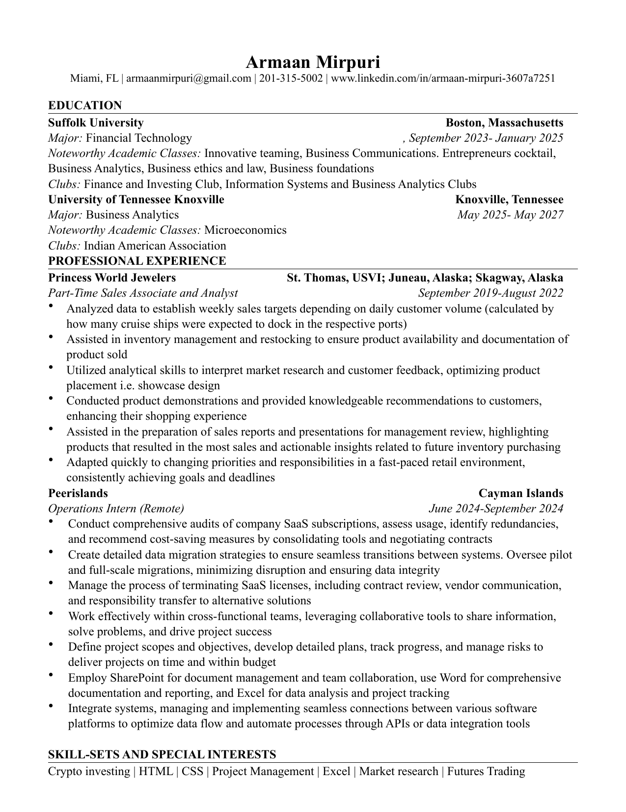

Discipline
The plan matters most when the market is moving fast.
I study Business Analytics at UT Knoxville and spend a lot of time thinking about markets, risk, and how to make better decisions with imperfect information.
My experience so far has been a mix of retail sales analysis, operations work, project tracking, and futures trading. I care about understanding how decisions are made, how risk is managed, and how small improvements can compound over time.
I'm a Business Analytics student at the University of Tennessee, Knoxville. My interest sits where business, finance, analytics, and practical tools meet.
I've worked in customer-facing sales, inventory support, operations, SaaS audits, data migration planning, and project tracking. Trading is another part of that same pattern for me: take in information, manage risk, stay calm, and review what happened honestly.
At Princess World Jewelers, I learned how much business depends on timing, traffic, inventory, and how people actually make buying decisions.
At Peerislands, I worked behind the scenes on SaaS audits, migrations, documentation, and project tracking.
In trading, I am learning that consistency is less about predicting every move and more about protecting your decision-making process.
I'm still developing as a trader, so I don't want to oversell it. The important part is the mindset: protect capital, follow rules, and learn from the trades where the process broke down.
The plan matters most when the market is moving fast.
A good setup is not useful if the downside is ignored.
The trade is not over when it closes. The review is where the lesson is.
A practical mix from school, internships, sales work, and trading.
I don't have a finished project section yet, and I'm not going to pretend I do. These are the areas I'm building toward right now.
Getting better at reviewing decisions after the trade, not just judging the result.
Following the reports, headlines, and market conditions that can change how futures trade.
Keeping the focus on position sizing, loss limits, and not letting one bad decision turn into five.
Using Excel, research, and clear reporting to make messy business information easier to act on.
My resume is a mix of operations, sales analysis, project support, and trading. The common thread is learning how decisions get made when time, people, and money are involved.
Financial Markets & Futures Trading
2024 - PresentPeerislands
June 2024 - September 2024Princess World Jewelers
September 2019 - August 2022Knoxville, Tennessee
May 2025 - May 2027
This is the same resume I use for internships and professional opportunities. The website gives more context; the PDF keeps it straightforward.

Click the preview to open the full PDF.
The easiest way to contact me is email. LinkedIn works too if you'd rather connect there first.